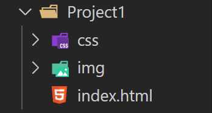

This guide walks you through creating a GitHub repo, cloning it to your computer, cleaning up your portfolio files, and deploying your site to Netlify.
netlify_portfolio
# Open a new terminal in VS Code
# Make sure you are in the correct Folder for your repository
# Use the command: git clone <repo_url>
# Paste your GitHub repo URL in this command
# Run the command and clone your repo to your computer
index.html
css/
└── style.css
img/
└── your-image.jpg

<link rel="stylesheet" href="css/style.css">
<img src="img/your-image.jpg" alt="Portfolio image">
⚠️
Each project folder is separate from your main portfolio's
index.html
portfolio-folder/
├── index.html ← main portfolio homepage
├── css/
├── img/
└── project-one/
├── index.html
├── css/
│ └── style.css
└── img/
└── screenshot.png
index.html and opening in a browser. Make sure images and
styles work.
git add .
git commit -m "Add organized portfolio files"
git push
portfolio repo from the list.main./
git add .
git commit -m "Update site"
git push